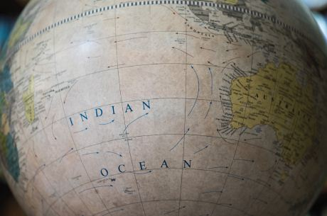

QUAD and the Indo Pacific
“The recent rise of the Quadrilateral Security Dialogue touted as the new NATO, prompts questions about the core beliefs and interests of the group. Rhianna G Dastidar examines the situation.”
The Quad, also known as the Quadrilateral Security Dialogue, was first formed under unique circumstances. It was not a military threat or economic crisis due to which it was formed, instead, it was a natural disaster. In 2004, an ad hoc body was formed in response to the Indian Ocean earthquake and tsunami. This was the beginning of the body, which consists of India, the United States, Japan and Australia. The Quad’s mission and purpose are inseparable from the growing importance of the Indo Pacific region.
The Indo Pacific’s significance owes itself to the numerous straits, such as the Strait of Malacca, Sunda Strait and Lombok Strait it contains, which are vital for global trade along with the presence of the South China Sea and the numerous natural resources in the region. Around 90,000 commercial shipping vessels pass through it, forming the backbone of international goods trade; and about 40 percent of the world’s oil supply travels through strategic choke points into and out of the Indian Ocean. Thus, as the Quad’s interests in the area are completely expected and was a founding principle as set down by former Japanese Prime Minister Shinzo Abe setting it down in his “Confluence of the Two Seas”, referring to the book by Mughal Prince Dara Shikoh, saying that “The Pacific and the Indian Oceans are now bringing about a dynamic coupling as seas of freedom and of prosperity. A "broader Asia" that broke away geographical boundaries is now beginning to take on a distinct form. Our two countries have the ability -- and the responsibility -- to ensure that it broadens yet further and to nurture and enrich these seas to become seas of clearest transparency.”
This concept of the term “Indo-Pacific” and “broader Asia” is relatively new and an invention of the 21st century. These concepts came with the emergence of Quad. The recognition of India in the same breath as the rest of Asia, and the emphasis of its significance in the region through the term, came with the advent of the Quad. Thus, it was not just that the body was based around the idea of a “free and open Indo Pacific” but also that this concept was conceived when the body was being formed. If the “Indo-Pacific” is the concept, Quad is the implementation of the idea; the two are hyperdependent. To talk of its activities in the Indo-Pacific is tantamount to speaking of all its activities.
The Quad works in the Indo Pacific region through two channels, military and maritime cooperation and aid-based consensus building. On the military front, all countries often either undertake bilateral exercises or take part in joint ones. The Malabar Exercises are of the highest importance to the Quad and are often taken to be a sign of the health of the body. The countries also often take part in each other’s multilateral exercises, including the RIMPAC and MILAN. Countries have also been observers at each other’s exercises, including the TALISMAN
SABRE, COPE INDIA and AUSINDEX. Group sails with additional countries such as South Korea and France have also taken place. The Indo Pacific also lends Quad its status as a core grouping instead of a regional body, there is a mutual benefit and flexibility to it, as the Indo Pacific is significant to all countries, not just the Quad, and everyone can be included in the conversation.
The Quad has recently increased its activities in the Indo Pacific context, in the wake of the COVID 19 pandemic. This brought it back to its roots of humanitarian assistance and disaster relief as undertaken during the 2004 tsunami. In a recent meet in of the four Prime Ministers on 12th March 2021, the group pledged to work together to help distribute COVID 19 vaccines. One of these actions includes the manufacturing of 1 billion Johnson and Johnson vaccines by India with US and Japanese aid, and then the subsequent distribution and logistics being handled by Australia. The Blue Dot Network as proposed by the U.S. Overseas Private Investment Corporation (OPIC), Japan Bank of International Cooperation (JBIC), and the Australian Department of Foreign Affairs and Trade (DFAT) also provides the necessary tools for infrastructure building in the region. The Quad’s continued dialogue and cooperation with the ASEAN, also point to its commitment to humanitarian aid.
The Joint Statement released recently and then the Washington Post Op-Ed pointed to all these goals in clear and distinct terms. In it was stated, “We bring diverse perspectives and are united in a shared vision for the free and open Indo-Pacific. We strive for a region that is free, open, inclusive, healthy, anchored by democratic values, and unconstrained by coercion -- pledge cooperation in international law to advance security and prosperity and counter threats to both in the Indo-Pacific and beyond. -- We will continue to prioritize the role of international law in the maritime domain, particularly as reflected in the United Nations Convention on the Law of the Sea (UNCLOS), and facilitate collaboration, including in maritime security, to meet challenges to the rules-based maritime order in the East and South China Sea.” The Quad also stated in its Op-Ed that it is committed to fighting climate change and reaffirmed its commitment to attend COP26 in Glasgow, along with Paris specified goals. This commitment to fighting climate change also proves the centrality of the Indo- Pacific to the body.
One cannot ignore the strategic importance of the Indo Pacific to China and the highly publicised terming of the body as the Asian NATO in response to China. While the Indo-Pacific is highly important to China which currently disputes the UNCLOS convention in the South China Sea, the Quad is not a reactionary body. As it takes on a more military aspect, the show of strength is perceptible to anyone but as the body does not explicitly declare itself anti-China, to take it as one would border on paranoia. That being said, however, the body does have the tools to become antagonistic to China and can strongly counter the advance of the Belt and Road initiative. Criticism about the Quad’s ties with the ASEAN is also unwarranted as they work regularly with the ASEAN. The ASEAN’s non-aligned policies continue to serve it well and provide that it can work constructively and peacefully with the Quad.
On a concluding note, even as many commentators may point to strong signalling and yet the general ambiguity of the body, one notion is definite; the QUAD shows the current tides of International Relations, ties are both generalised and close-knit, are based on common elements, and are committed to global transparency.
